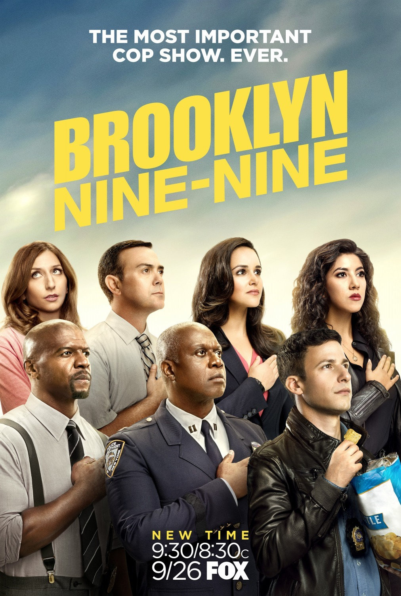

| |
The Terrorby David KajganichIMDBb: 8.3/10, Rotten Tomatoes: 93%, Google Users: 95% Genre: Horror/Drama Description: British Royal Navy Capt. Sir John Franklin is nearing the end of an uneven career. Described as "a man everyone likes, but no one respects," Franklin has seen men die under his leadership on previous expeditions, and now he would like to retire with honors by discovering the Northwest Passage. Guiding the HMS Erebus into uncharted territory, Franklin's most perilous journey yet pushes his crew to the brink of extinction. Frozen, isolated and stuck at the end of the earth, the men have been put in horrible danger by their commander's Victorian hubris. A struggle to survive ignites infighting, and Franklin must try to undo the damage he has caused. Running Time: 42 – 56 minutes Original Release: March 25, 2018 – present Recent Release: Season 1 – April 10, 2018
Cast: Jared Harris, Tobias Menzies, Paul Ready, Adam Nagaitis, Ian hart, Nive Nielsen, Ciaran Hinds
Producer: Robyn-Alain Feldman No. of Seasons: 11 No. of Episodes: 10 Comment Reviews on Season 1
|
||
| |
This is Usby Dan FogelmanIMDBb: 8.8/10, Rotten Tomatoes: 91%, Google Users: 95% Genre: Comedy/Drama Description: Jack and his wife who is very pregnant with triplets have just moved into their new home in Pittsburgh. Successful and handsome television actor Kevin is growing increasingly bored with his bachelor lifestyle. Randall who was abandoned at a fire station by his father as an infant is a stylish New York-based businessman working to raise two daughters with his wife, Beth. These people are among a group, several of whom share a birthday, of seemingly random individuals whose lives intertwine in unexpected ways. Running Time: 42 minutes Original Release: September 20,2016 – present Recent Release: Season 3 – November 20, 2018
Cast: Milo Ventimiglia, Mandy Moore, Sterling Brown, Chrissy Metz, Justin Hartley etc.
Producers: Dan Fogelman, Jess Rosenthal, Donald Todd, Ken Olin, Charlie Gogolak etc. No. of Seasons: 3 No. of Episodes: 42 Comment Reviews on Season 3
|
||
| |
On My Blockby Lauren Iungerich, Eddie Gonzalez, Jeremy HaftIMDBb: 8.1/10, Rotten Tomatoes: 95%, Google Users: 98% Genre: Coming of Age Description:"On My Block" follows a quartet of bright, street-savvy friends who are navigating their way through high school, including all the of the triumph, pain and newness they experience along the way. Lifelong friendships are tested as Monse, Ruby, Jamal and Cesar confront the challenges of adolescence and life in their predominantly Hispanic and black neighbourhood in South Central Los Angeles in this coming-of-age comedy series. Running Time: 25 – 31 minutes Original Release: March 16, 2018 – present Recent Release: Season 1 – March 16, 2018
Cast: Sierra Capri, Jason Genao, Brett Gray, Diego Tinoco, Jessica Marie Garcia, Ronni Hawk
No. of Seasons: 1 No. of Episodes: 10 Comment Reviews on Season 1
|
||
| |
Tom Clancy’s Jack Ryanby Carlton Cuse, Graham RolandIMDBb: 8.1/10, Rotten Tomatoes: 75%, Google Users: 97% Genre: Action/Political/Thriller Description: Author Tom Clancy introduced the character of Jack Ryan in a series of books before Ryan headed to the big screen in several films. Now the former U.S. Marine is featured in an episodic series for the first time, with John Krasinski portraying Ryan in this Amazon original thriller that centers on Ryan as an up-and-coming CIA analyst. He is thrust into a dangerous field assignment for the first time and uncovers a pattern in terrorist communication. That launches him into the middle of a dangerous gambit with a new breed of terrorism that threatens destruction on a global scale. Running Time: 42 – 64 minutes Original Release: August 31, 2018 –present Recent Release: Season 1 – August 31, 2018
Casts: John Krasinski, Abbie Cornish, Wendell Pierce, Ali Suliman, Dina Shihabi, Amir El-Masry
Producers: Nazrin Choudhury, Jose Luis Ecolar, Robert Phillips No. of Seasons: 1 No. of Episodes: 8 Comment Reviews on Season 1
|
||
| |
Big Mouthby Nick Kroll, Andrew Goldberg, Mark Levin, Jennifer FlackettIMDBb: 8.1/10, Rotten Tomatoes: 100%, Google Users: 94% Genre: Adult Animation/Sitcom Description: Even for a cartoon character, going through puberty isn't easy for a young person. Andrew is learning that first hand as he experiences the nightmare that is growing up in this animated series geared toward adults. Along for the ride are friends Nick and Jessi, who develop a budding romance along the way. The comedy veterans who lend their voices to "Big Mouth" include John Mulaney, Nick Kroll, Maya Rudolph and Jordan Peele. Running Time: 25 – 28 minutes Original Release: September 29, 2017 – present Recent Release: Season 2 – October 5, 2018
Cast: Nick Kroll, John Mulaney, Jessi Klein, Jason Mantzoukas, Jenny Slate etc.
Producer: Nate Funaro No. of Seasons: 2 No. of Episodes: 20 Comment Reviews on Season 2
|
||
| |
Ozarkby Bill Dubuque, Mark WilliamsIMDBb: 8.4/10, Rotten Tomatoes: 69%, Google Users: 94% Genre: Crime/Drama Description: Created by Bill Dubuque ("The Accountant," "The Judge"), this drama series stars Jason Bateman as Marty Byrde, a financial planner who relocates his family from Chicago to a summer resort community in the Ozarks. With wife Wendy and their two kids in tow, Marty is on the move after a money-laundering scheme goes wrong, forcing him to pay off a substantial debt to a Mexican drug lord in order to keep his family safe. While the Byrdes' fate hangs in the balance, the dire circumstances force the fractured family to reconnect. Running Time: 52 – 80 minutes Original Release: July 21, 2017 – present Recent Release: Season 2 – August 31, 2018
Cast: Jason Bateman, Laura Linney, Sofia Hublitz, Skylar Gaertner, Julia Garner etc.
Producers: Nate Jason Bateman, Chris Mundy, Bill Dubuque, Mark Williams No. of Seasons: 2 No. of Episodes: 20 Comment Reviews on Season 2
|
||
| |
Roseanneby Matt WilliamsIMDBb: 7/10, Rotten Tomatoes: 69%, Google Users: 83% Genre: Sitcom Description: Explore life, death and everything in between through the relatable, hilarious and brutally honest lens of the working-class Conner household, which is located in the drab, fictional exurb of Langford, Ill. With the inimitable Roseanne Barr at its epicenter as the family's matriarch, the series tackles current issues with fresh stories and even more laughs. Roseanne is joined by her husband, Dan, and their children, D.J., Darlene and Becky. Roseanne's warm, but neurotic, sister Jackie rounds out the core of the family. Running Time: 21 – 22 minutes Original Release: October 18,1988 – May 22, 2018 Recent Release: Season 10 – May 22, 2018
Cast: Roseanne Barr, John Goodman, Laurie Metcalf, Sara Gilbert, Michael Fishman etc.
Producers: Matt Williams, Al Lowenstein, Sid Youngers (Season 10) No. of Seasons: 10 No. of Episodes: 231 Comment Reviews on Season 10
|
||
|  |
|
Brooklyn Nine-Nineby Dan Goor, Michael SchurIMDBb: 8.4/10, Rotten Tomatoes: 95%, Google Users: 98% Genre: Sitcom Description: Detective Jake Peralta, a talented and carefree cop with the best arrest record, has never had to follow the rules too closely or work very hard. That changes when Ray Holt, a man with a lot to prove, becomes the new commanding officer of Brooklyn's 99th precinct. As Holt reminds Peralta to respect the badge, an extremely competitive colleague Detective Amy Santiago starts to close in on the hotshot cop's arrest record. Other members of the precinct include Sgt. Terry Jeffords, a devoted family man, Detective Charles Boyle, a hard worker who idolizes Jake, and Rosa Diaz, a sexy-yet-intimidating detective. Civilian office manager Gina Linetti is tasked with cleaning up everyone's mess, while somehow getting involved in everyone's business. Running Time: 20 – 23 minutes Original Release: September 17, 2013 – present Recent Release: Season 5 – May 20, 2018
Casts: Andy Samberg, Stephanie Beatriz, Terry Crews, Melissa Fumero, Joe Lo Truglio etc.
Producers: Marhsall Boone, Norm Hiscock, Matt Nodella, Andy Samberg, Sierra Ornelas No. of Seasons: 5 No. of Episodes: 112 Comment Reviews on Season 5
|
|
| |
Everything Sucksby Ben York Jones, Michael MohanIMDBb: 7.6/10, Rotten Tomatoes: 72%, Google Users: 96% Genre: Comedy/Drama Description: It's the 1990s in Boring, Ore., and groups of outcasts in Boring High School's AV and drama clubs are trying to brave the ups and downs of teenage life in a simpler world without smartphones and other 21st century technology. The two crews of nerdy students are frustrated that no one is taking them seriously so they decide the best way to make it through high school is to join forces and make a movie that'll help them get noticed. And there's also the usual teenage romance issues to deal with. Luke, the de facto ringleader of the AV club, falls for Kate, the principal's daughter, but she doesn't necessarily reciprocate the romantic feelings Luke has for her and is dealing with her own issues. Running Time: 20 – 27 minutes Original Release: February 16,2018 Recent Release: Season 1 – February 16,2018
Cast: Jahi Di’Allo Winston, Peyton Kennedy, Patch Darragh, Claudine Mboligikpelani Nako, Rio Mangini etc.
Producers: Josh Appelbaum, Andre Nemec, Jeff Pinker, Scott Rosenberg, Ben York Jones, Michael Mohan No. of Seasons: 1 No. of Episodes: 10 Comment Reviews on Season 1
|
||
| |
Iron Fistby Scott BuckIMDBb: 6.7/10, Rotten Tomatoes: 36%, Google Users: 86% Genre: Action/Crime Description: When Danny Rand was 10-years old, he survived a mysterious plane crash that claimed the lives of his extremely wealthy parents. Rescued by warrior monks, Danny grew up in the of city of K'un-Lun, where he endured harsh conditions, but also trained to be a fierce warrior. Years later, Danny returns home to New York, where he wants to reconnect with his past and take his rightful place at his family's company, which is being run by his father's former business partner. Danny hopes to restore his family legacy by defeating the people who threaten it. Running Time: 49 – 61 minutes Original Release: March 17, 2017 – September 7,2018 Recent Release: Season 2 – September 7, 2018
Cast:Finn Jones, Jessica Henwick, Tom Pelphrey, Jessica Stroup, Ramon Rodriguez etc.
Producer: Evan Perazzo No. of Seasons: 2 No. of Episodes: 23 Comment Reviews on Season 2
|